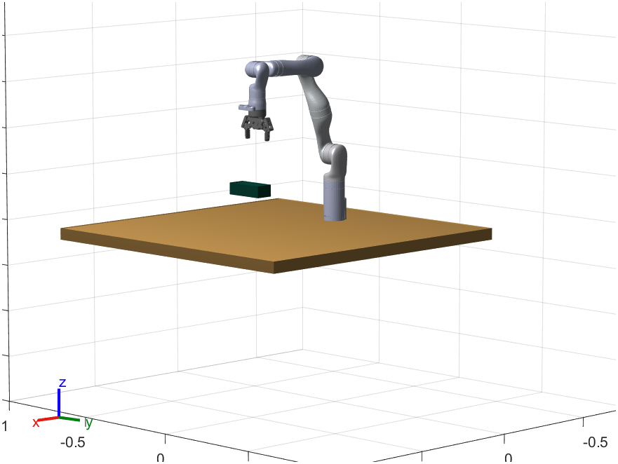

This project investigates acoustic mechanisms using encapsulated air bubbles for microrobot propulsion in fluids, remote drug release, and energy harvesting. It also focuses on data-driven controllers for precise microrobot navigation.
My role involves developing a closed-loop control system to track a micro swimmer using an ultrasound probe and a 7-link Kinova Gen3 robot arm, as it navigates a viscous medium under vibration forces.
Technologies Used: MATLAB, OpenCV, GStreamer, ROS, Kinova Gen 3 Robot, Data-Driven Controllers
Concepts Learnt: Camera Caliberation, Joint space and Task space control,Trajectory Planning, Inverse Kinematics, Object Detection
